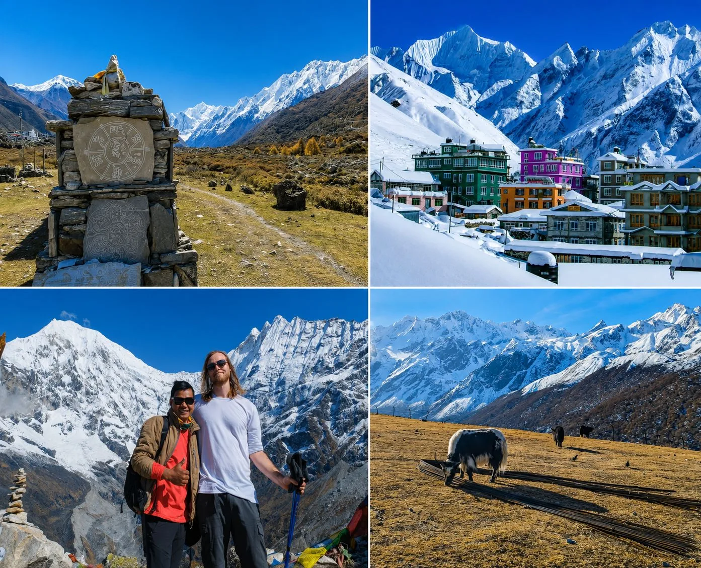
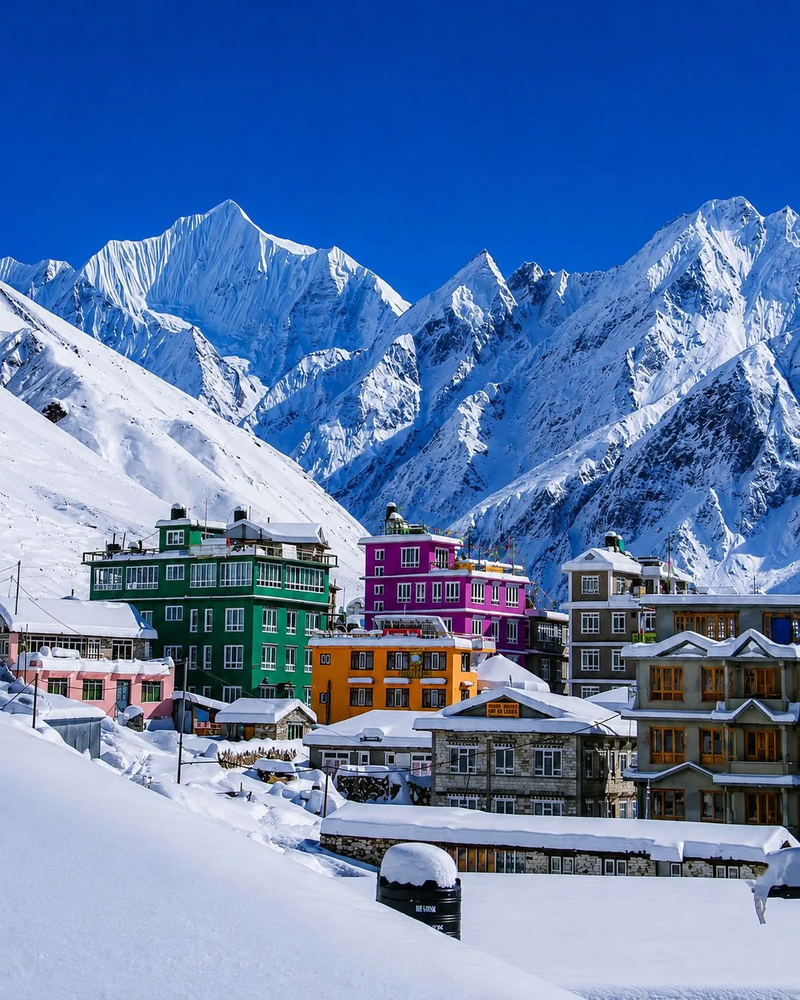

1. Landscape & Cultural Heritage of Kyanjin Ri vs. Tserko Ri

For trekkers seeking genuine seclusion away from the crowded highways of Everest and lower Annapurna, Kyanjin Ri vs. Tserko Ri delivers an unforgettable wilderness immersion. These trails traverse ancient trading arteries connecting Nepal to Tibet, passing through traditional stone settlements where centuries-old traditions, Bon religion, and Tibetan Buddhism thrive intact.
Because road networks into these regions are limited or strictly controlled, you experience a pure mountain rhythm. Encounters with wild blue sheep (bharal), Himalayan thars, red pandas, and soaring golden eagles are remarkably common across these protected reserves.
"Whenever passing Buddhist chortens, stupas, or engraved stone mani walls, always walk clockwise (keeping the sacred structure to your right hand). This age-old practice honors local customs and brings good fortune for high pass crossings."
2. Restricted Area Permits (RAP) & Government Regulations
To safeguard sensitive border ecosystems and preserve unique indigenous cultures, the Government of Nepal categorizes several remote regions as Restricted Areas:
| Region / Trek | Permits Required | Fee Structure | Special Conditions |
|---|---|---|---|
| Manaslu Circuit | Manaslu Restricted Area Permit (RAP), MCAP, ACAP | Autumn: $100/wk + $15/day; Spring: $75/wk + $10/day | Minimum 2 trekkers + licensed guide mandatory |
| Upper Mustang | Upper Mustang RAP + ACAP Permit | $500 per person for first 10 days + $50/day after | Minimum 2 trekkers + licensed guide mandatory |
| Langtang Valley | Langtang National Park Permit + TIMS Card | NPR 3,000 (~$23 USD) + NPR 2,000 TIMS | Open to individual guided trekkers; no minimum group rule |
| Kanchenjunga | Kanchenjunga RAP + Conservation Area Permit (KCAP) | $20 per person per week + NPR 2,000 KCAP | Minimum 2 trekkers + licensed guide mandatory |
3. Trail Logistics, Itinerary & Mountain Terrain

Trekking in remote regions demands self-sufficiency, respect for seasonal river crossings, and an adaptable mindset. Trails often feature high suspension bridges suspended over torrential glacial torrents, carved cliff stairways, and expansive boulder fields.
Accommodations consist of welcoming, family-run teahouses serving homegrown organic barley, buckwheat, seasonal potatoes, and freshly made Dal Bhat. In the highest passes (e.g. Dharmasala on Manaslu or high camps in Kanchenjunga), facilities are rustic, making your own sub-zero sleeping bag essential.
4. Optimal Weather Windows & Seasonal Timing
Autumn (October – November): The undisputed peak season across remote Nepal. With the monsoon departing in late September, skies remain spotless, daytime temperatures are crisp and comfortable, and pass conditions over Larkya La (5,106m) or high viewpoints are dry and stable.
Spring (March – May): Excellent clarity and rising temperatures. The lush valleys of Langtang and lower Manaslu are ablaze with scarlet rhododendrons and wild primulas, while higher elevations still retain scenic winter snowcaps.
Monsoon (June – August): While trans-Himalayan desert regions like Upper Mustang sit in the rain-shadow and are prime for summer trekking, lower river valleys (Langtang and Marshyangdi) face heavy rainfall, active landslides, and leeches.
5. Essential Packing List for Remote Himalayan Expeditions
Technical Alpine Gear
- Sleeping Bag: 4-season down bag rated to -15°C to -20°C with compression sack.
- Footwear: Waterproof, broken-in alpine hiking boots with sturdy ankle support and Vibram soles.
- Microspikes / Traction: Essential for icy mornings on high pass moraines (Larkya La, Tserko Ri).
- Trekking Poles: Telescoping carbon or aluminum poles for steep descents over loose scree.
Health & Power Logistics
- Water Purification: SteriPEN UV purifier or dual-stage chemical water purification tablets.
- Power Bank: High-capacity 20,000mAh battery pack (cold temperatures drain phone batteries quickly).
- Comprehensive Medical Kit: Diamox (Acetazolamide), broad-spectrum antibiotics, blister pads, and rehydration salts.
6. Frequently Asked Questions
Can I trek in restricted areas solo without a guide?
No. Nepal Immigration law strictly prohibits solo independent trekking in designated restricted areas (including Manaslu, Upper Mustang, Tsum Valley, Nar Phu, and Kanchenjunga). Trekkers must travel in a minimum group of two foreign nationals accompanied by a certified, licensed Nepali mountain guide arranged through a registered agency like Igloo Himalaya Treks.
How does teahouse food compare in remote areas?
Teahouses in remote regions provide nourishing, organic, freshly prepared meals featuring local crops such as barley porridge, potato pancakes, buckwheat roti, yak cheese, and traditional Dal Bhat. Menus are simpler than in Namche Bazaar, but food is wholesome, hot, and prepared with authentic mountain hospitality.
Is there mobile phone network and electricity in these valleys?
Nepal Telecom (NTC) and Ncell provide intermittent 4G/3G connectivity in lower villages, but high pass settlements have limited or zero cell reception. Lodges rely on solar power, so carrying a high-capacity power bank is highly recommended.

Ready to Experience the Himalayas?
Whether you are preparing for high-altitude trekking, cultural circuits, or alpine summit expeditions, start planning a bespoke journey tailored to your fitness, travel season, and style.